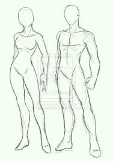
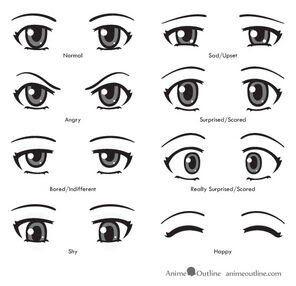

En el anime el diseño de personajes puede variar de ciertas maneras dependiendo de la época o los dibujantes.
Cabe destacar que en el anime son usualmente influenciados más de un tipo de estilo de brocha más que la caligrafía de lápiz. Algunas características visibles
Los ojos: comúnmente son muy grandes, ovalados, muy definidos y con colores llamativos como rojo, rosa, verde, morado, aparte de los normales como café y azul. Osamu Tezuka introdujo los ojos grandes inspirado por producciones de Disney como Mickey Mousey de este modo se toman de un modo humorístico o de personalidad al personaje.
El coloreado es para dar a los ojos profundidad.
Generalmente una textura de luz de sombra, el tono de color y una sombra oscura son usados.Cabe destacar que no en todas las series hay ojos grandes como en las películas de Hayao Miyazaki.

El cabello: hay de todas formas, tamaños y volúmenes, para personajes masculinos o femeninos.
Además de una gran variedad de colores como los de los ojos, estos pueden tener diferentes formas de sombreado.
El cuerpo: puede ser muy parecido a las proporciones del cuerpo humano, aunque de una manera muy escultural como en el moé.
Variaciones a la proporción también pueden cambiar como en el chibi o super deformed donde las rasgos pueden ser muy exagerados, aunque estos son para dar un toque de comedia a las series.

La cara: la nariz y la boca son pequeños, la parte baja de la cara parece ser la de un pentágono. Una amplia variedad de expresiones faciales son usados por caracteres para denotar estados de ánimo y pensamientos.
El anime utiliza un conjunto diferente de las expresiones faciales en comparación con la animación occidental.
Otros elementos estilísticos son comunes y a menudo en la comedia de anime personajes que están conmocionados o sorprendidos harán una "cara de culpa" en la que se expone una expresión extremadamente exagerada[cita requerida].